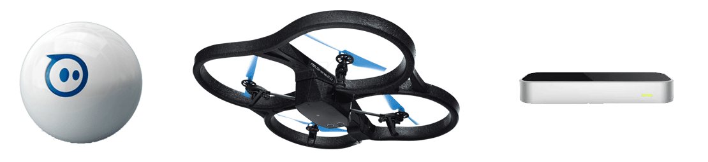
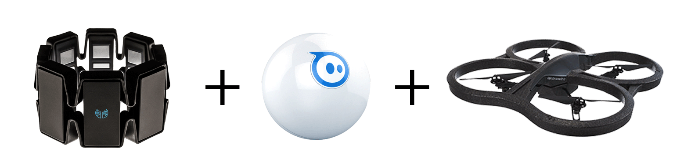
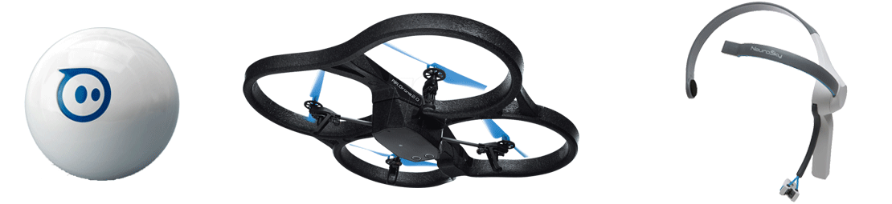

A world of wonders
Programming for robots in JavaScript
Why?
“You don't have the face of someone who's into robotics.”

Leap Motion and Sphero (and Drone!!!)
Live demo!
But first...
Next?
MYO armband + Sphero + Drone


DEMO!!!
Next??
Neurosky + Sphero + Drone



Repos
Thank you!
Twitter: @charlie__gerard
Github: charliegerard